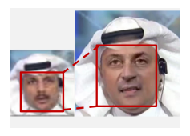
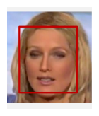
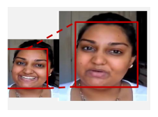

The growing realism and accessibility of manipulated and generated faces threaten the trustworthiness of digital media. To detect such forgeries, deepfake detectors based on vision foundation models have shown promising performance, but they typically rely on a single pretrained representation and are prone to overfitting to particular training distributions. To improve generalization to unseen forgeries, we propose UCF-Net, an uncertainty-aware cascaded fusion network that harnesses CLIP's language-aligned semantic priors and DINO's self-supervised visual-structure priors. UCF-Net extracts hierarchical features across Transformer depths, uses layer-wise expert aggregation to adaptively combine each encoder's multi-level cues, and performs weighted fusion of the resulting representations based on entropy-derived uncertainty. We further consolidate public deepfake datasets into a unified benchmark of approximately 4M images and construct a separate cross-generator evaluation set with over 8K face images from eight recent generators. On the unified benchmark, UCF-Net achieves the best mean AUC among the evaluated methods in both in-domain and cross-domain evaluations. On the cross-generator set, it adapts effectively with limited target-domain data, although zero-shot transfer remains challenging.
Motivation
CLIP and DINO capture distinct evidence patterns
Their distinct evidence patterns and failure modes motivate uncertainty-aware fusion.
Figure 1. CLIP- and DINO-based detectors exhibit different failure patterns on the shown examples; UCF-Net remains correct when either or both individual encoders fail.
Method
Harnessing CLIP and DINO priors with uncertainty-aware cascaded fusion
UCF-Net preserves hierarchical CLIP and DINO cues, adaptively aggregates multi-level features, and fuses the resulting representations according to uncertainty.
CLIP-DINO Feature Modeling
Retain hierarchical representations
Keep multi-level CLIP and DINO features.
CLIPDINO
Layer-wise expert aggregation
Adaptively aggregate multi-level features
LEA adaptively aggregates multi-level features.
GateShared expert
Uncertainty-aware feature fusion
Balance CLIP and DINO evidence
UAF balances the two representations by feature uncertainty.
CLIP
DINO
UAF
Method figure
UCF-Net
Benchmark
A unified benchmark for evaluating generalization in deepfake detection
The unified benchmark and a separately constructed cross-generator image evaluation set support in-domain, cross-domain, and cross-generator evaluation.
Benchmark figure
Overview of the unified deepfake benchmark and the separately constructed cross-generator evaluation set
2,215,477Training185,716Validation1,393,675In-domain test286,448Cross-domain test
4,081,316 images
A unified deepfake benchmark
The unified benchmark covers four forgery categories under binary real/fake supervision: face swapping (FS), face reenactment (FR), entire face synthesis (EFS), and face editing (FE).

FSFace SwappingFRFace Reenactment

EFSEntire Face Synthesis

FEFace Editing
Representative examples of the four forgery categories in Figure 3(a).
8,807 RECENT GENERATOR FACES
Eight recent image generators
A separate set for zero-shot transfer and few-shot adaptation.
From provenance-bearing records to audited face crops
Data acquisitionVerify provenance and remove duplicates.
Face processingDetect, align, crop, and re-detect faces.
Human auditAudit validity, occlusion, realism, and clarity.
7,466 provenance records7,295 verified sources9,758 aligned face crops8,807 retained crops
Main results
Generalization beyond the training distribution
UCF-Net is shown with a solid reference curve, while compared methods use dashed curves. Click a legend item to show or hide a method, and hover or focus any point to read its exact AUC.
Best in-domain mean AUC95.33
Best mean AUC across six in-domain datasets.
Dataset profile
In-domain mAUC
Click a legend item to show or hide a method; hover or focus a point for exact AUC.
Scale: 0–100 AUC (%)
Mean AUC
Method ranking
Best cross-domain mean AUC92.15
+2.95 over DFF-Adapter
Best mean AUC across held-out datasets and DF40 forgery categories.
Held-out datasets & DF40 categories
Cross-domain AUC
Select a method in the legend to show or hide it. Focus a point for its exact AUC.
Scale: 0–100 AUC (%)
Mean AUC
Method ranking
Few-shot adaptation91.36
5-shot AUC
5 fake + 5 real images per generator; evaluation uses the remaining generated images and 8,807 real images sampled in a dataset-balanced way from the original test split.
Adaptation scale
Cross-generator AUC
Click a legend item to show or hide a method; hover or focus a point for exact AUC.
Scale: 0–100 AUC (%)
0-shot40.90UCF-Net5-shot91.36Highest among evaluated methods50-shot98.24Highest among evaluated methods100-shot98.81Highest among evaluated methods
Each card changes one design choice while the remaining training setup stays fixed. The bars report cross-domain mAUC.
CLIP–DINO encoder pair
The heterogeneous CLIP–DINO pair performs best.
Best configurationCLIP + DINO · 92.15
Layer-wise aggregation
LEA adaptively aggregates multi-level features across Transformer depths.
Cross-domain gain+0.30 mAUC
Fusion strategy
UAF outperforms fixed and parameter-heavy alternatives.
Gain over sum (average)+2.03 mAUC
LoRA rank
Increasing adaptation capacity does not always improve transfer.
Best evaluated rankr = 4 · 92.15
Training data scale
Scale of Training Data
Cross-domain mAUC under 10K, 1M, and 2M training settings. The 10K and 1M sets are proportional samples from the full training split; 1M is half of the full split, while 2M denotes the complete approximately 2.2M-image training split.
Cross-domain mAUC (%). Click a legend item to show or hide a method; hover or focus a point for the exact value.
View exact training-scale values
Impact of training data scale on cross-domain mean AUC
Method
10K
1M
2M
Xception
69.81
68.14
66.92
RECCE
63.18
63.01
66.18
SPSL
65.88
70.34
67.22
Effort
83.37
88.79
88.91
DFF-Adapter
85.12
89.70
89.20
UCF-Net
85.58
91.46
92.15
Qualitative evidence
Seeing what the model sees
Grad-CAM and feature-space visualizations provide qualitative evidence for how CLIP and DINO representations are fused.
Feature fusion
More concentrated facial responses in the shown examples
On the shown examples, UAF produces more concentrated facial responses than the compared fusion strategies.
Feature space
More separated clusters in the plotted representations
The 2-D t-SNE view shows more separated real/fake clusters in the plotted representations; this is not detection AUC.
Detector comparison
Linear separability in the plotted 2-D embeddings
UCF-Net reaches 87.0% joint-view and 92.5% DF40-Test 2-D t-SNE linear separability; these values are not detection AUC.
Extended evidence
CLIP and DINO attention in additional examples
Across the shown samples, CLIP and DINO exhibit different attention patterns.
Release materials
Resources & Citation
Paper, source code, pretrained models, datasets, and the project citation entry.
 Models
Models